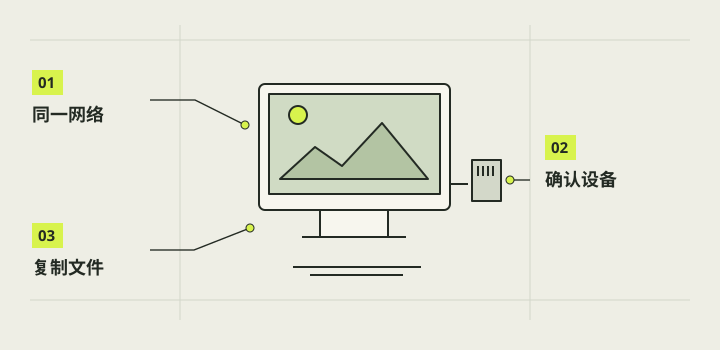

连接电脑与传文件
本章把电脑访问树莓派、复制照片到电脑、把照片下载到手机三件事拆开。运行系统的卡不等于可直接插入 Mac 读取的照片盘；手机收到文件也不等于自动进入“照片”相簿。先确认设备同网和访问权限，再选择传输路径。

本章完成目标
- 分清电脑端、树莓派本机和手机端的操作
- 确认身份后复制一张 JPG 到电脑
- 说明手机文件下载与相簿保存的区别
开始前准备好
- 树莓派正常启动，已有一张可打开的照片
- 电脑与树莓派处于可互通的网络；SSH 已由所有者启用
- 知道自己设置的用户名与可信设备地址，不公开密码或二维码
- SSH
- 通过网络安全进入另一台电脑的命令行。
- SCP
- 借助 SSH 在电脑与树莓派之间复制文件。
- 局域网
- 同一网络中设备之间直接通信所用的本地网络。
选定传输方向
若目标是在 Mac 或 Windows 保存原始 JPG，优先选已启用的网络文件传输；若目标是在手机查看和下载，用相机应用的发送流程。确认两端接入可互通的网络。树莓派不是接上线就会在电脑里出现的 USB 存储设备，现有相机照片所在的 ext4 卡也不能直接当作 Mac 通用读卡盘。
核对远程访问与身份
SSH 在新系统里可能默认关闭；有桌面时可按树莓派官方设置界面启用，也可在写卡时由 Imager 配置。电脑首次连接时核对地址和主机指纹，只接受确认为自己设备的身份。不同电脑可用终端 SSH 或支持 SFTP 的文件管理器，不要复制历史聊天中的私有主机地址。
注意 / 不要关闭主机密钥检查以掩盖地址变化。
在树莓派找到源照片
用文件管理器找到刚才用官方工具拍的 JPG，或当前相机版本说明指定的照片文件夹，挑一张能预览的文件并记下完整路径。当前参考版的保存位置以 software/pi-camera-1.0/README.md 为准；尚未完成自己设备的软件适配时，先复制官方测试图。确认源文件存在，避免复制空目录或误拿旧照片。
复制一张到电脑
把示例中的用户名、树莓派地址和照片完整路径都换成自己的值，用 SCP 将一张照片复制到电脑当前文件夹。也可用支持 SFTP 的文件管理器拖拷。复制后在电脑上打开图像，核对文件名与大小；这是复制，不是移动，树莓派原片仍应保留。未发布的 自制相机应用不影响官方测试图的复制。
scp '用户名@树莓派地址:照片完整路径' .注意 / 命令中的中文是占位文本，必须替换；密码不要写入命令。
单独验收手机接收
若已安装匹配的 自制相机应用并且它提供发送页，可在图库选图后生成本次二维码，让手机连上可互通的同一 Wi‑Fi 再扫码。页面可能提供 JPG 或所选照片 ZIP；先单张再测多张和减选。自己设备尚未适配应用时，此项标为待适配。下载后在手机“文件”查找，再自行存入“照片”；不要公开带凭证的二维码。
注意 / 会话过期或网络变化后，从相机重新发起。
完成后，逐项打勾。
勾选帮助你记录进度，不代表项目替你完成了实机验收。
遇到问题，从这里排查。
电脑无法连接
检查两端网络、SSH 状态和地址；主机指纹变化时停止并核对设备身份。
手机扫码后找不到照片
检查同网互通和会话有效期；下载成功先看“文件”的下载项。
本项目的实际进展
- 2026-10-26 用户报告已传到 iPhone；实屏附件显示单张原图和二维码。没有本次手机文件哈希，不证明批量 ZIP、减选或直接入“照片”。
- 现有照片在 ext4 系统目录；SCP 成功不能推定 Mac 或 Windows 直接插卡读取目标已经通过。
资料与核对依据
- C 手机传图反馈与边界 · camera-project/C-软件/qa/r4-transfer-20261026/user-feedback.md
- New Cam 1.0 功能状态 · camera-project/C-软件/pi-camera-1.0/feature-status.md
- 树莓派官方 SSH 与 SCP ↗
- Apple 官方下载文件位置 ↗
资料核对日期：2026-10-30。不同硬件、系统版本和材料需要重新验证。